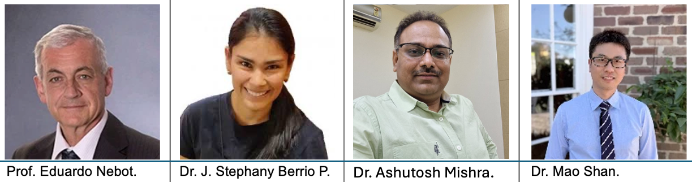

| Home | Program | Directions |
Advanced Driver Assistance Systems (ADAS) and supervised end-to-end driving are reaching mass deployment, yet most systems are designed, tuned and validated for a narrow slice of the world: well-marked roads, temperate weather, standard passenger cars and drivers from a few markets. This workshop asks what it takes to bring the next level of ADAS safely to every road. Building on our IEEE ITSC 2026 workshop, it brings together researchers from four continents (Australia, Asia, Europe and North America) to examine five linked questions: how to argue and assure safety for full self-driving and large driving models; how ADAS should be fine-tuned for different cultural driving environments and road conditions; how connectivity, from V2X messages to cooperative information sharing between vehicles, can become part of ADAS; how assistance and driver monitoring must adapt to large passenger vehicles and to driver states from drowsiness to frozen gaze; and what the human driver must still provide, and be given, as ADAS takes on more of the driving task. Six invited talks are followed by a moderated panel and an interactive breakout in which early-career and senior researchers jointly draft open problems and evaluation needs.
The University of Queensland, Australia
The University of Sydney, Australia
Birla Institute of Technology & Science, UAE
|
 |